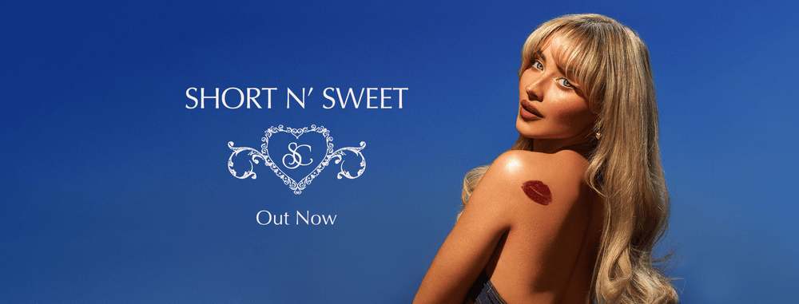

Short n' Sweet - Carpenter's sixth studio album released on August 23
Here's a time line of Carpenter's life:
1999 - Born in Quakertown, Pennsylvania
2011 - Carpenter's first acting role in a guest role on the NBC drama series Law & Order: Special Victims Unit.Around the same time, she performed as part of the Hunan Broadcasting System's Gold Mango Audience Festival program in China, singing "Something's Got a Hold on Me".
2012 - Carpenter had a recurring role in the Fox sitcom The Goodwin Games. She appeared in Horns (2013) and recorded "Smile" for the compilation album Disney Fairies: Faith, Trust, and Pixie Dust, inspired by the Disney Fairies film series; the song charted on Radio Disney. She had a recurring role as Princess Vivian in Sofia the First, for which she performed the song "All You Need" with Ariel Winter.
2013 - Carpenter was cast in a Disney Channel series Girl Meets World, a spin-off of Boy Meets World, as Maya Hart. The show consisted of 72 episodes, and concluded on January 20, 2017. Carpenter recorded the show's theme song alongside her co-star Rowan Blanchard. Prior to 2014, Carpenter signed a five-album deal with Disney-owned then-label Hollywood Records.
2014 - Carpenter released her debut single, "Can't Blame a Girl for Trying", which was co-written by Meghan Trainor. The single received positive reviews and titled her debut EP of the same name that was released in April 2014. In July 2014, Carpenter contributed lead vocals to the Disney Channel Circle of Stars cover version of "Do You Want to Build a Snowman?". She recorded "Stand Out" for the Disney Channel movie, How to Build a Better Boy, which premiered in August 2014. She released her first Christmas single, "Silver Nights", that same year.
2015 - Carpenter released "We'll Be the Stars". It served as the lead single for her debut studio album Eyes Wide Open, which was released on April 14, 2015, and peaked at number 43 on the Billboard 200. The album is primarily a teen-pop album with elements of pop folk. According to Billboard, it sold over 12,000 copies in its first week. Upon release, the album received positive reviews and went on to win two Radio Disney Music Awards. The album was followed with a second single, "Eyes Wide Open". In August, Carpenter performed at the D23 Expo. In December, Carpenter released her second Christmas single, "Christmas The Whole Year Round".
2018 - Carpenter released the song "Alien" with English DJ Jonas Blue. The song reached number one on the US Dance Club Songs chart and number 12 on the US Dance/Electronic Songs chart. The duo performed it on Jimmy Kimmel Live!. In May, Carpenter was included in Nylon magazine's "25 Gen Z'ers Changing The World". In September, Carpenter appeared in The Hate U Give (2018), based on the novel of the same name.
2021 - Carpenter announced that she had signed with Universal Music Group's Island Records.[91] She released her first single under the label, "Skin", on January 22, 2021. The song debuted at number 48 on the Billboard Hot 100, becoming her first entry on the chart. It also became her first top 40 hit on the Billboard Global 200 chart. Carpenter performed the song on The Late Late Show with James Corden and at the 32nd annual GLAAD Media Awards. In September, she appeared in the third volume of Prime Video's Savage X Fenty Show.
2024 - Carpenter appeared on Christina Aguilera's live Spotify-exclusive special celebrating the 25th anniversary of Aguilera's debut album, duetting on "What a Girl Wants". That month, she embarked on the Short n' Sweet Tour, her first arena tour. Carpenter produced and starred in a Netflix holiday special, A Nonsense Christmas with Sabrina Carpenter, released on December 6. It featured duets with Chappell Roan, Tyla, Shania Twain among others. "Espresso" was streamed 1.6 billion times on Spotify, more than any other song in 2024.
If you have time, you should read more about this incredible human being on her Wikipedia.